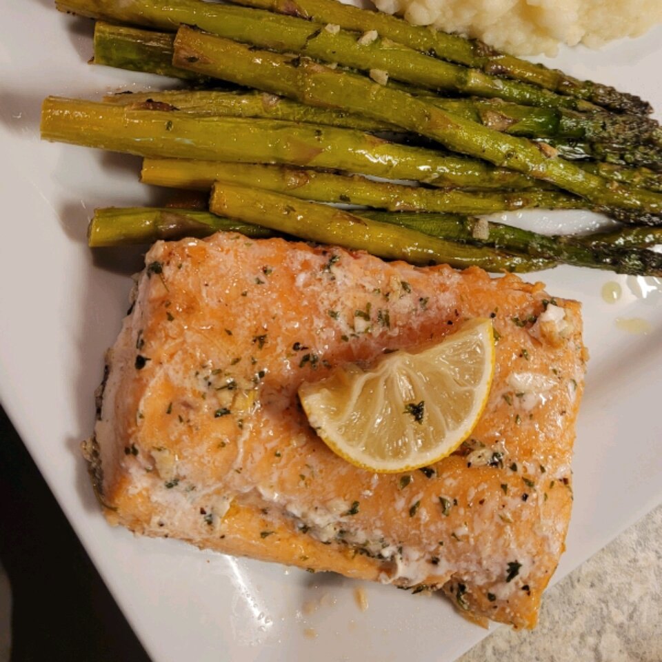

Salmon Florentine
A succulent white wine reduction sauce over salmon on a bed of spinach.
Ingredients
- ½ cup butter
- ½ white onion, sliced
- 2 cloves garlic, minced, divided
- 2 (4 ounce) salmon steaks
- 1 cup semi-dry white wine (such as Chablis)
- 1 cup heavy whipping cream
- 1 tablespoon butter
- 2 cups chopped spinach
Steps
- Melt 1/2 cup butter in a large skillet over medium-high heat; cook and stir onion and 1/2 of the garlic,
breaking onion into rings, until softened, 5 to 10 minutes. Add salmon to onion mixture and cook until
salmon is about 1/4-cooked, about 2 minutes.
- Pour wine and cream over salmon and cook, stirring lightly and flipping salmon halfway through, until liquid
is reduced by 1/2 and salmon flakes easily with a fork, 5 to 10 minutes.
- Melt 1 tablespoon butter in a skillet over medium heat; cook and stir remaining garlic until fragrant and
golden, 1 to 3 minutes. Add spinach and cook until spinach is wilted, 3 to 4 minutes.
- Place spinach on 2 serving plates, making a well in the center of each. Arrange each salmon steak in the
center of the well and pour sauce over each. Garnish salmon with onion.